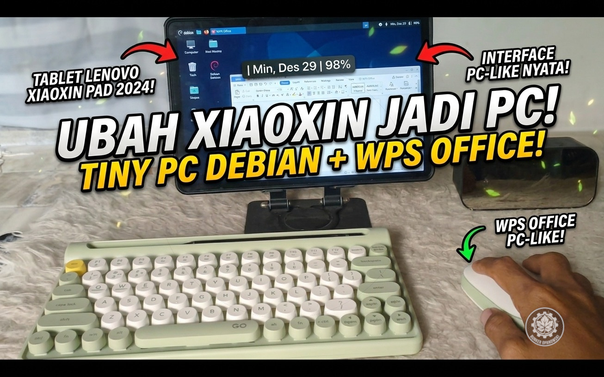

Jujur deh, bosen gak sih pake tablet cuma buat nonton atau scroll doang? Gw juga ngerasain itu. Padahal Lenovo Xiaoxin Pad 2024 punya hardware yang lebih dari cukup buat kerja beneran.
Nah, di sini gw mau share gimana caranya gw sulap tablet ini jadi yang gw sebut "Tiny PC" — tanpa harus ganti OS, tanpa risiko bootloop, dan tanpa drama dual-boot.

"Awalnya gw juga mikir — emang bisa? Debian di atas Android? Bukannya itu kayak naruh kucing di atas anjing?"
Konsepnya Simpel Banget
Idenya gini: Debian jalan on-top alias numpang di sistem Android. Bukan replace, bukan dual-boot. Jadi Android tetap ada, Debian ngikut di atasnya. Kapanpun lo mau balik ke Android, tinggal force close — selesai. Gak ada drama.
Kenapa Metode Ini Juara
Gw coba beberapa opsi sebelumnya. Ini perbandingan jujurnya:
Setup Tiny PC Gw
Ini spek persis yang gw pake sehari-hari di Bunker:
WPS Office versi PC di dalam Debian itu levelnya beda, bray. Bukan aplikasi Android biasa — ini versi desktop yang sama kayak yang lo pake di laptop kerjaan. Ngetik dokumen? Olah data? Persis sama.

"Pas pertama kali WPS nyala di Debian dan bisa ngetik dokumen normal — ya Allah, rasanya kayak upgrade hidup level 99."
Modal yang Lo Butuhin
Gak ada yang mahal di sini. Ini checklist lengkapnya:
Termux di Play Store udah deprecated dan gak diupdate lagi. Install yang dari F-Droid biar versinya terbaru dan semua package bisa diinstall dengan benar.


Tips Tambahan: Biar Makin Stabil!
Sebelum lo mulai, ada beberapa optimasi yang worth it banget buat dilakuin biar pengalaman Tiny PC-nya smooth dan gak gampang force-close sendiri:

"4 langkah kecil di atas, dan tiba-tiba Tiny PC lo stabil kayak setup kantoran beneran. Gak perlu modal gede, cukup tau caranya."
Kesimpulan: Worth It Gak?
Worth it banget, bray. Ini bukan gimmick. Buat gw yang kerja dari rumah — nulis konten, olah dokumen, session terminal buat dua project GitHub Pages — Xiaoxin Pad yang udah disetup jadi Tiny PC benar-benar mengubah cara gw kerja.
Dan yang paling gw suka: kapanpun mau balik ke Android, tinggal force close. Selesai. Dua OS, satu device, nol drama.

"Dua OS, satu device, nol drama. Itu Tiny PC-ku. Gimana punya lo, bray?"
📝 Takeaway
Debian on Android = Linux desktop beneran, tanpa risiko brick. Install lewat Termux + proot-distro, bukan dual-boot.
WPS Office PC di Debian = fitur full, kompatibel sama .docx/.xlsx. Bukan versi Android yang dikebiri.
Pro tip: aktifkan Developer Options + no background process limit = stabil seharian. Matiin Play Protect pas install, nyalain lagi setelah kelar.
Modal minimal: tablet + keyboard + mouse + Termux (gratis). No debt, no FOMO, no drama.
Tetap autodidak, tetap berkah! 🏴Udah pernah coba setup serupa? Drop ceritanya di komentar! 🔧